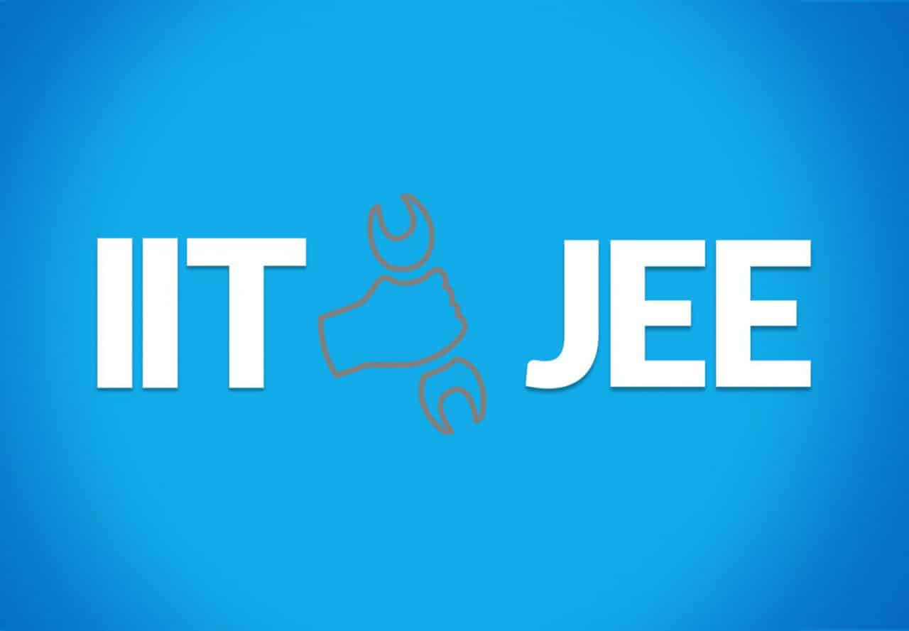

<nz-card nzTitle="Frequently Asked Questions" id="faq-card">
    <div nz-row [nzGutter]="{ xs: 8, sm: 16, md: 24, lg: 32, xl: 32, xxl: 32 }">
        <div nz-col nzSpan="12">
            <nz-collapse>
                <nz-collapse-panel nzHeader="How is Guaranteed Selection in IIT possible?">
                    <div>
                        
                    </div>
                    <p>
                        We have the best in class faculty who apart from being IIT/NIT alumni have keen interest in the
                        field of teaching and have ample experience in guiding students towards their goal. We focus
                        more on the important topics and teach unique as well as easy methods which are very less time
                        consuming as compared to conventional methods.

                        Unlike others we provide individually customized course plans. So now with Altus Knowledge,
                        selection in IIT is possible for everyone!
                    </p>
                </nz-collapse-panel>

                <nz-collapse-panel
                    nzHeader="How is Altus knowledge helpful for PUC students not aspiring for Engineering or Medical?">
                    <div>
                        
                    </div>
                    <p>
                        The board percentage is important in all career options in life. We assure that the board
                        percentage will increase by at least 20% by making sure that the student reaches up to his/her
                        maximum potential.
                    </p>
                </nz-collapse-panel>

                <nz-collapse-panel
                    nzHeader="Why should a student aspiring for career in medicine join Altus Knowledge?">
                    <div>
                        
                    </div>
                    <p>
                        All tutors are Doctors or IIT/NIT alumni who aptly guide our students. We teach unique and easy
                        shortcut methods for Physics and Chemistry. Also, we understand that there are lots of
                        terminologies to be memorised in Biology, so we teach special and easy memory techniques.
                    </p>
                </nz-collapse-panel>
            </nz-collapse>
        </div>

        <div nz-col nzSpan="12">
            <nz-collapse>
                <nz-collapse-panel nzHeader="What is Pay after Selection?">
                    <div>
                        
                    </div>
                    <p>
                        We do not take any tuition fees before or during the classes. You need to pay only after you
                        clear the IIT-JEE. We have confidence that all the students who are in our IIT-JEE batches will
                        be selected in IIT. So we take fees only after selection. We will teach you for free. You need
                        to pay only if you are selected, which is for sure!
                    </p>
                </nz-collapse-panel>

                <nz-collapse-panel
                    nzHeader="Will it be beneficial for a below average student if he joins Altus knowledge?">
                    <div>
                        
                    </div>
                    <p>
                        Definitely! We take special care of the week students by arranging extra classes and doubt
                        clearing classes as and when required. We teach at an optimum pace so as to make sure each and
                        every student is able to follow the lessons. We cultivate student’s interest in the studies and
                        make sure that they score much higher marks than expected. We believe that every student is
                        capable of succeeding in exams if inspired and guided properly.
                    </p>
                </nz-collapse-panel>

                <nz-collapse-panel nzHeader="What is the importance of IIT Foundation?">
                    <div>
                        
                    </div>
                    <p>
                        Having a clear understanding of the basics is the first step in the journey towards IIT and a
                        very crucial one too. Joining the IIT foundation course and starting your preparation early
                        gives you an edge over others in the competition.
                    </p>
                </nz-collapse-panel>
            </nz-collapse>
        </div>
    </div>
</nz-card>